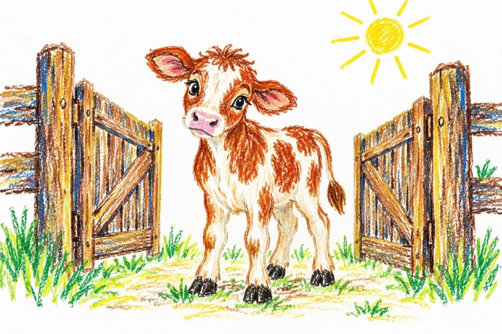

Nătăfleață
Nătărău sau Nătăfleață,
Nu-i un nume ce te-nalță.
E un nume ce se poartă
Când stai ca - vițelu-n poartă!
Când îți dai cu stângu-n dreptu,
Când nu știi să porți respectu’,
Când ești prost ca noaptea-n târg
Și gândești ca un nătâng!
Când porți aur și năframă
Și nu știi nici cum te cheamă,
Când te culci sub un copac
Și-ți cade o pară-n cap
Și mai e și mălăiață
Pentru-o gură nătăfleață!
Când de toate n-ai habar
Dumnezeu are de grijă
Și îți face și cuibar
Cum îi face bunăoară
La o barză când e chioară!
Ea aminte și învață
Fi’ncă ești un nătăfleață
Și treci ca un fulg prin viață!
Te dezvață, Nătăfleață
De prostie și învață
Și-o s-ajungi - om de povață!
Vasile Groza